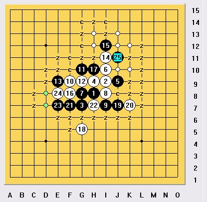

请大虾们帮我看一个斜月
首页
茗弈阁
#1 请大虾们帮我看一个斜月 作者：左伟光 发表时间：2010-9-20 15:57:55
这个24不会杀了。
=======上图对应的爱五子棋谱代码如下，以便你拆解：========
h8i9g7h9j9i10g8i8i7f9g10g9e9i11i12f8h10g5j7k7f7h7e7e8
======================================================
#2 Re:请大虾们帮我看一个斜月 作者：gerbo 发表时间：2010-9-20 17:28:13
=======上图对应的爱五子棋谱代码如下，以便你拆解：========
h8i9g7h9j9i10g8i8i7f9g10g9e9i11i12f8h10g5j7k7f7h7e7e8f12
====================================================== 这个25比上图的要好些
［ 菜包先生 于 2010-10-3 16:00:46 时花20金币送鲜花一朵］
#3 Re:请大虾们帮我看一个斜月 作者：gerbo 发表时间：2010-9-20 18:11:40
 这个我再摆下。发现黑很凶狠，但白也也防的强。
这个我再摆下。发现黑很凶狠，但白也也防的强。
#4 Re:请大虾们帮我看一个斜月 作者：丌同 发表时间：2010-10-2 12:55:11
这里没有必胜了，黑优的局面，只能靠你自己功力去做棋。
棋都是做出来的，对不对。
［ 菜包先生 于 2010-10-3 15:57:43 时花20金币送鲜花一朵］
#5 Re:请大虾们帮我看一个斜月 作者：忧郁的双眼 发表时间：2010-10-8 10:56:21
=======上图对应的爱五子棋谱代码如下，以便你拆解：========
h8i9g7h9j9i10g8i8i7f9g10g9e9i11i12f8h10g5f10
======================================================
#6 Re:请大虾们帮我看一个斜月 作者：极地剑客 发表时间：2010-10-8 13:18:04
2楼正解~~~~~~~~
#7 Re:请大虾们帮我看一个斜月 作者：茗弈求学 发表时间：2010-10-8 16:53:14
2楼什么结论？